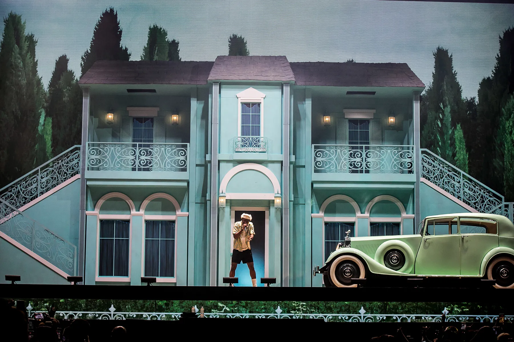
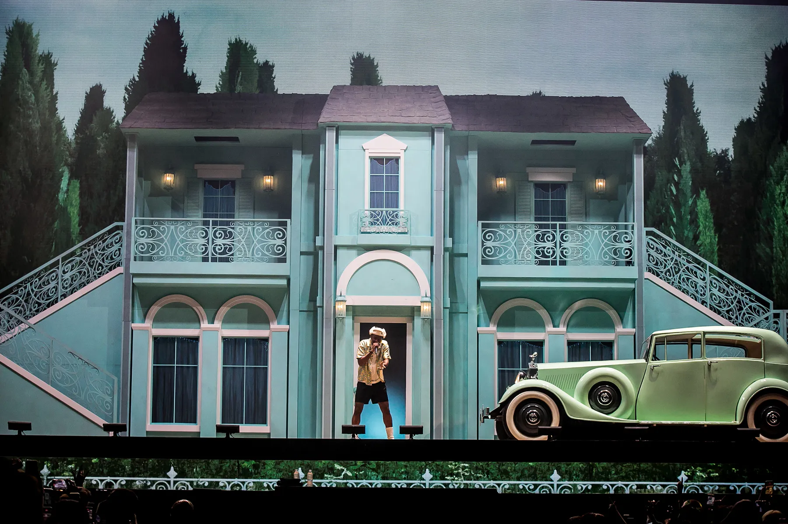

TOURS
타일러 더 크리에이터의 열정적인 라이브 퍼포먼스와 투어 기록
CALL ME IF YOU GET LOST TOUR (2022)
2022년 초, 북미 전역을 아우르며 진행된 성공적인 투어. 앨범의 스토리를 담은 독특한 무대 연출과 퍼포먼스가 특징이었습니다. 수많은 팬들의 환호 속에서 타일러의 존재감을 다시 한번 입증한 투어입니다.
 


주요 공연 도시: 로스앤젤레스, 뉴욕, 시카고, 토론토 등
IGOR TOUR (2019)
그래미 수상 앨범 'IGOR'를 기념하며 진행된 투어. 아이고르 페르소나를 완벽하게 구현한 분장과 연기가 인상 깊었습니다. 전 세계 팬들과 소통하며 예술성을 더욱 확장한 계기가 되었습니다.
주요 공연 도시: 런던, 파리, 베를린, 도쿄 등